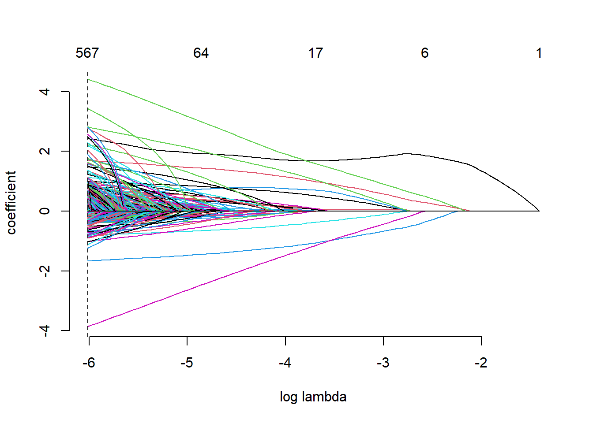
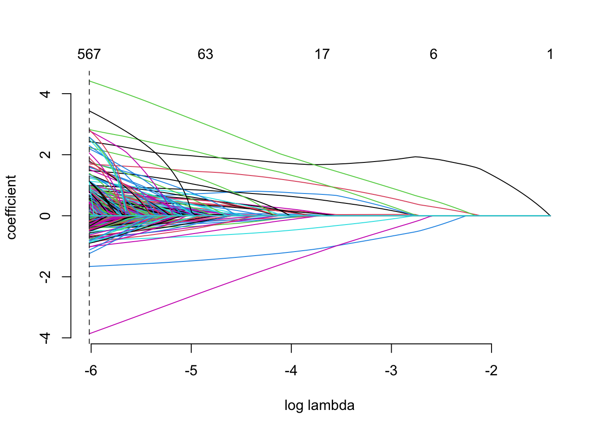

Capitulo 4 Modeling
En esta parte aplicaremos dos modelos: un Lasso-Logit y un XGboosting.
4.1 Cross-Validated LASSO-logit
Seestima un cross validated LASSO y se muestra el la gráfica de CV Binomial Deviance vs Complejidad
#CV LASSO
# se hacen 5 folds
cvlasso_a<-cv.gamlr(x = Xa, y = Ya, verb = T, family = 'binomial', nfold = 5)## Warning in gamlr(x, y, ...): numerically perfect fit for some observations.## fold 1,2,3,4,5,done.#Grafica
plot(cvlasso_a)
4.1.1 Grafica Lasso de los coeficientes vs la complejidad del modelo.
plot(cvlasso_a$gamlr)
4.1.2 Hiper parametro
Automaticamente se elige el lambda que minimiza la devianza OOS.
# Identificador para el lambda deseado
# Valor del lambda deseado
#lambda resultante
a_lambda<- colnames(coef(cvlasso_a, select="min"))
cvlasso_a$gamlr$lambda[a_lambda]## seg100
## 0.002433614.1.3 Variables
A continuacion una tabla con los coeficientes que se selecciona para el CV LASSO. Que sorprendentemente solo fueron 561.
coefs<-coef(cvlasso_a, select="min", k=2, corrected=TRUE)
coefs<-as.data.frame(coefs[,1])
names(coefs)<-"valor"
coefs<-coefs %>% filter(valor !=0)
modelvariables<-row.names(coefs)
modelvariables## [1] "intercept" "lead_time"
## [3] "arrival_date_year2015" "arrival_date_year2017"
## [5] "arrival_date_monthDecember" "arrival_date_monthJune"
## [7] "arrival_date_week_number9" "arrival_date_week_number19"
## [9] "arrival_date_day_of_month22" "stays_in_weekend_nights"
## [11] "stays_in_week_nights" "adults"
## [13] "mealHB" "mealUndefined"
## [15] "countryAGO" "countryARE"
## [17] "countryAUT" "countryBEL"
## [19] "countryBGD" "countryBRA"
## [21] "countryCHN" "countryCPV"
## [23] "countryCYP" "countryDEU"
## [25] "countryESP" "countryFIN"
## [27] "countryFRA" "countryGAB"
## [29] "countryGBR" "countryGEO"
## [31] "countryGLP" "countryHKG"
## [33] "countryHND" "countryIDN"
## [35] "countryIRL" "countryITA"
## [37] "countryJEY" "countryJPN"
## [39] "countryKOR" "countryMAC"
## [41] "countryMAR" "countryMDV"
## [43] "countryNGA" "countryNLD"
## [45] "countryNOR" "countryPAK"
## [47] "countryPAN" "countryPOL"
## [49] "countryPRT" "countryQAT"
## [51] "countryRUS" "countrySAU"
## [53] "countrySEN" "countrySRB"
## [55] "countrySWE" "countryTJK"
## [57] "countryTUR" "countryZAF"
## [59] "market_segment8" "distribution_channel5"
## [61] "is_repeated_guest" "reserved_room_typeE"
## [63] "reserved_room_typeP" "assigned_room_typeB"
## [65] "assigned_room_typeI" "assigned_room_typeP"
## [67] "booking_changes" "deposit_typeB"
## [69] "agent10" "agent107"
## [71] "agent11" "agent110"
## [73] "agent118" "agent13"
## [75] "agent132" "agent134"
## [77] "agent14" "agent151"
## [79] "agent152" "agent155"
## [81] "agent157" "agent16"
## [83] "agent168" "agent17"
## [85] "agent191" "agent214"
## [87] "agent215" "agent22"
## [89] "agent220" "agent23"
## [91] "agent234" "agent240"
## [93] "agent241" "agent242"
## [95] "agent243" "agent251"
## [97] "agent26" "agent262"
## [99] "agent27" "agent281"
## [101] "agent288" "agent291"
## [103] "agent308" "agent314"
## [105] "agent315" "agent32"
## [107] "agent332" "agent341"
## [109] "agent359" "agent38"
## [111] "agent390" "agent40"
## [113] "agent410" "agent440"
## [115] "agent56" "agent6"
## [117] "agent63" "agent7"
## [119] "agent75" "agent8"
## [121] "agent86" "agent89"
## [123] "agent9" "agent94"
## [125] "company102" "company110"
## [127] "company112" "company153"
## [129] "company154" "company204"
## [131] "company218" "company242"
## [133] "company253" "company270"
## [135] "company277" "company309"
## [137] "company316" "company321"
## [139] "company350" "company38"
## [141] "company39" "company392"
## [143] "company40" "company405"
## [145] "company410" "company416"
## [147] "company461" "company470"
## [149] "company478" "company504"
## [151] "company51" "company68"
## [153] "company72" "company77"
## [155] "companyNULL" "customer_typeTransient"
## [157] "adr" "required_car_parking_spaces"
## [159] "total_of_special_requests" "dia_semmiercoles"
## [161] "dia_semviernes" "pascua_m1"
## [163] "agent_company107_NULL" "agent_company11_NULL"
## [165] "agent_company110_NULL" "agent_company118_NULL"
## [167] "agent_company13_NULL" "agent_company134_NULL"
## [169] "agent_company151_NULL" "agent_company152_NULL"
## [171] "agent_company155_NULL" "agent_company17_NULL"
## [173] "agent_company191_NULL" "agent_company21_NULL"
## [175] "agent_company214_NULL" "agent_company234_NULL"
## [177] "agent_company240_NULL" "agent_company242_NULL"
## [179] "agent_company262_NULL" "agent_company281_NULL"
## [181] "agent_company291_NULL" "agent_company314_NULL"
## [183] "agent_company315_NULL" "agent_company32_NULL"
## [185] "agent_company332_NULL" "agent_company341_NULL"
## [187] "agent_company38_NULL" "agent_company390_NULL"
## [189] "agent_company410_NULL" "agent_company440_NULL"
## [191] "agent_company56_NULL" "agent_company8_NULL"
## [193] "agent_company86_NULL" "agent_company9_NULL"
## [195] "agent_company94_NULL" "agent_companyNULL_102"
## [197] "agent_companyNULL_110" "agent_companyNULL_112"
## [199] "agent_companyNULL_153" "agent_companyNULL_204"
## [201] "agent_companyNULL_218" "agent_companyNULL_253"
## [203] "agent_companyNULL_270" "agent_companyNULL_277"
## [205] "agent_companyNULL_281" "agent_companyNULL_309"
## [207] "agent_companyNULL_316" "agent_companyNULL_321"
## [209] "agent_companyNULL_350" "agent_companyNULL_38"
## [211] "agent_companyNULL_392" "agent_companyNULL_416"
## [213] "agent_companyNULL_461" "agent_companyNULL_470"
## [215] "agent_companyNULL_478" "agent_companyNULL_68"
## [217] "agent_companyNULL_77" "singles_adults"
## [219] "dif_room" "weekmonthFebruary_9"
## [221] "weekmonthJune_27" "weekmonthMay_19"
## [223] "weekmonthNovember_49" "weekmonthSeptember_40"
## [225] "daymontApril_4" "daymontApril_5"
## [227] "daymontApril_6" "daymontAugust_18"
## [229] "daymontDecember_16" "daymontDecember_18"
## [231] "daymontDecember_3" "daymontDecember_5"
## [233] "daymontDecember_6" "daymontFebruary_8"
## [235] "daymontJuly_1" "daymontJuly_10"
## [237] "daymontJuly_15" "daymontJuly_16"
## [239] "daymontJuly_17" "daymontJuly_2"
## [241] "daymontJuly_23" "daymontJuly_27"
## [243] "daymontJuly_29" "daymontJuly_5"
## [245] "daymontJuly_7" "daymontJune_10"
## [247] "daymontJune_21" "daymontJune_26"
## [249] "daymontJune_8" "daymontMarch_29"
## [251] "daymontMay_15" "daymontMay_25"
## [253] "daymontMay_26" "daymontMay_27"
## [255] "daymontNovember_12" "daymontNovember_23"
## [257] "daymontNovember_28" "daymontOctober_12"
## [259] "daymontOctober_13" "daymontOctober_14"
## [261] "daymontOctober_22" "daymontOctober_25"
## [263] "daymontOctober_26" "daymontOctober_27"
## [265] "daymontOctober_8" "weekdaymonthApril_15_4"
## [267] "weekdaymonthApril_15_5" "weekdaymonthApril_15_6"
## [269] "weekdaymonthAugust_33_14" "weekdaymonthAugust_34_18"
## [271] "weekdaymonthAugust_35_29" "weekdaymonthDecember_49_3"
## [273] "weekdaymonthDecember_49_5" "weekdaymonthDecember_50_6"
## [275] "weekdaymonthDecember_51_16" "weekdaymonthDecember_53_26"
## [277] "weekdaymonthFebruary_10_28" "weekdaymonthFebruary_8_24"
## [279] "weekdaymonthJanuary_1_6" "weekdaymonthJanuary_2_6"
## [281] "weekdaymonthJuly_27_1" "weekdaymonthJuly_27_2"
## [283] "weekdaymonthJuly_27_3" "weekdaymonthJuly_28_11"
## [285] "weekdaymonthJuly_28_5" "weekdaymonthJuly_28_7"
## [287] "weekdaymonthJuly_29_15" "weekdaymonthJuly_29_16"
## [289] "weekdaymonthJuly_30_23" "weekdaymonthJuly_31_27"
## [291] "weekdaymonthJuly_31_29" "weekdaymonthJune_24_10"
## [293] "weekdaymonthJune_24_8" "weekdaymonthJune_26_21"
## [295] "weekdaymonthJune_27_26" "weekdaymonthMarch_11_10"
## [297] "weekdaymonthMarch_11_14" "weekdaymonthMarch_9_1"
## [299] "weekdaymonthMay_21_15" "weekdaymonthMay_22_25"
## [301] "weekdaymonthMay_22_26" "weekdaymonthMay_22_27"
## [303] "weekdaymonthNovember_46_12" "weekdaymonthNovember_48_20"
## [305] "weekdaymonthNovember_48_23" "weekdaymonthNovember_48_27"
## [307] "weekdaymonthNovember_49_27" "weekdaymonthNovember_49_28"
## [309] "weekdaymonthOctober_40_2" "weekdaymonthOctober_41_8"
## [311] "weekdaymonthOctober_41_9" "weekdaymonthOctober_42_12"
## [313] "weekdaymonthOctober_42_13" "weekdaymonthOctober_42_14"
## [315] "weekdaymonthOctober_42_17" "weekdaymonthOctober_42_9"
## [317] "weekdaymonthOctober_43_17" "weekdaymonthOctober_43_22"
## [319] "weekdaymonthOctober_43_23" "weekdaymonthOctober_44_25"
## [321] "weekdaymonthOctober_44_26" "weekdaymonthOctober_44_27"
## [323] "weekdaymonthSeptember_36_5" "weekdaymonthSeptember_37_4"
## [325] "month_diasemApril_lunes" "month_diasemDecember_lunes"
## [327] "month_diasemDecember_viernes" "month_diasemFebruary_sabado"
## [329] "month_diasemJuly_miercoles" "month_diasemMarch_domingo"
## [331] "month_diasemMay_jueves" "month_diasemOctober_sabado"
## [333] "week_diasem1_sabado" "week_diasem12_lunes"
## [335] "week_diasem15_lunes" "week_diasem15_martes"
## [337] "week_diasem15_miercoles" "week_diasem21_domingo"
## [339] "week_diasem22_jueves" "week_diasem22_miercoles"
## [341] "week_diasem22_viernes" "week_diasem24_miercoles"
## [343] "week_diasem24_viernes" "week_diasem26_martes"
## [345] "week_diasem27_domingo" "week_diasem27_miercoles"
## [347] "week_diasem28_sabado" "week_diasem29_sabado"
## [349] "week_diasem29_viernes" "week_diasem31_lunes"
## [351] "week_diasem31_viernes" "week_diasem33_sabado"
## [353] "week_diasem36_jueves" "week_diasem37_jueves"
## [355] "week_diasem38_martes" "week_diasem39_sabado"
## [357] "week_diasem40_sabado" "week_diasem41_martes"
## [359] "week_diasem44_domingo" "week_diasem45_sabado"
## [361] "week_diasem47_miercoles" "week_diasem48_viernes"
## [363] "week_diasem49_viernes" "week_diasem5_sabado"
## [365] "week_diasem5_viernes" "week_diasem51_viernes"
## [367] "tasa_canc" "market_dist3_TA_TO"
## [369] "market_dist8_5" "market_distOfflineTA_TO_TA_TO"
## [371] "cust_depostiTransient_B" "cust_segmentContract_7"
## [373] "cust_segmentTransient_7" "cust_segmentTransient-Party_7"
## [375] "lead_depositA_[ 16, 59)" "lead_depositA_[ 59,146)"
## [377] "lead_depositA_[146,737]" "lead_depositB_[ 59,146)"
## [379] "lead_week1_[ 59,146)" "lead_week1_[146,737]"
## [381] "lead_week10_[146,737]" "lead_week12_[ 59,146)"
## [383] "lead_week15_[ 16, 59)" "lead_week17_[146,737]"
## [385] "lead_week18_[ 59,146)" "lead_week2_[ 0, 16)"
## [387] "lead_week2_[ 16, 59)" "lead_week2_[ 59,146)"
## [389] "lead_week2_[146,737]" "lead_week21_[ 0, 16)"
## [391] "lead_week22_[ 59,146)" "lead_week22_[146,737]"
## [393] "lead_week24_[ 16, 59)" "lead_week24_[ 59,146)"
## [395] "lead_week29_[146,737]" "lead_week3_[ 0, 16)"
## [397] "lead_week3_[ 59,146)" "lead_week3_[146,737]"
## [399] "lead_week31_[ 16, 59)" "lead_week32_[ 0, 16)"
## [401] "lead_week32_[ 16, 59)" "lead_week32_[ 59,146)"
## [403] "lead_week34_[146,737]" "lead_week35_[ 16, 59)"
## [405] "lead_week37_[ 59,146)" "lead_week39_[ 59,146)"
## [407] "lead_week4_[146,737]" "lead_week40_[ 59,146)"
## [409] "lead_week42_[ 0, 16)" "lead_week42_[ 16, 59)"
## [411] "lead_week42_[ 59,146)" "lead_week43_[ 59,146)"
## [413] "lead_week44_[ 0, 16)" "lead_week44_[ 59,146)"
## [415] "lead_week44_[146,737]" "lead_week45_[ 16, 59)"
## [417] "lead_week45_[ 59,146)" "lead_week48_[ 0, 16)"
## [419] "lead_week48_[ 59,146)" "lead_week49_[ 59,146)"
## [421] "lead_week49_[146,737]" "lead_week5_[ 0, 16)"
## [423] "lead_week5_[ 59,146)" "lead_week50_[ 0, 16)"
## [425] "lead_week50_[ 16, 59)" "lead_week50_[ 59,146)"
## [427] "lead_week51_[146,737]" "lead_week52_[ 59,146)"
## [429] "lead_week52_[146,737]" "lead_week53_[146,737]"
## [431] "lead_week6_[ 0, 16)" "lead_week6_[ 59,146)"
## [433] "lead_week6_[146,737]" "lead_week8_[ 0, 16)"
## [435] "lead_week8_[146,737]" "lead_week9_[ 0, 16)"
## [437] "meal_reservFB_A" "meal_reservHB_G"
## [439] "meal_reservSC_A" "meal_reservSC_D"
## [441] "meal_reservSC_F" "meal_reservSC_G"
## [443] "meal_reservSC_P" "meal_reservUndefined_D"
## [445] "country_monthAGO_December" "country_monthAGO_February"
## [447] "country_monthAND_January" "country_monthARE_January"
## [449] "country_monthAUS_April" "country_monthAUS_February"
## [451] "country_monthAUS_January" "country_monthAUT_July"
## [453] "country_monthAUT_March" "country_monthAUT_October"
## [455] "country_monthBEL_August" "country_monthBEL_July"
## [457] "country_monthBEL_October" "country_monthBGR_May"
## [459] "country_monthBLR_January" "country_monthBRA_April"
## [461] "country_monthCHE_July" "country_monthCHE_March"
## [463] "country_monthCHL_April" "country_monthCHL_December"
## [465] "country_monthCHN_July" "country_monthCHN_October"
## [467] "country_monthCOL_November" "country_monthCOL_September"
## [469] "country_monthCYP_August" "country_monthCYP_May"
## [471] "country_monthCZE_August" "country_monthCZE_July"
## [473] "country_monthCZE_October" "country_monthDEU_April"
## [475] "country_monthDEU_December" "country_monthDEU_October"
## [477] "country_monthEGY_February" "country_monthEGY_March"
## [479] "country_monthEGY_November" "country_monthESP_April"
## [481] "country_monthESP_December" "country_monthESP_July"
## [483] "country_monthESP_June" "country_monthFRA_April"
## [485] "country_monthFRA_January" "country_monthFRA_June"
## [487] "country_monthFRA_March" "country_monthFRA_May"
## [489] "country_monthFRA_November" "country_monthFRA_September"
## [491] "country_monthGAB_September" "country_monthGBR_June"
## [493] "country_monthGBR_May" "country_monthGBR_November"
## [495] "country_monthGBR_October" "country_monthGEO_March"
## [497] "country_monthGIB_August" "country_monthGIB_March"
## [499] "country_monthHND_February" "country_monthHRV_March"
## [501] "country_monthHUN_August" "country_monthHUN_November"
## [503] "country_monthIRL_July" "country_monthIRL_June"
## [505] "country_monthIRL_May" "country_monthIRL_October"
## [507] "country_monthIRN_February" "country_monthIRN_March"
## [509] "country_monthIRN_October" "country_monthISR_July"
## [511] "country_monthITA_April" "country_monthITA_July"
## [513] "country_monthJPN_December" "country_monthKAZ_January"
## [515] "country_monthKAZ_July" "country_monthKEN_March"
## [517] "country_monthKOR_June" "country_monthKWT_December"
## [519] "country_monthLBN_August" "country_monthLUX_December"
## [521] "country_monthLUX_February" "country_monthLUX_November"
## [523] "country_monthLUX_October" "country_monthMAR_August"
## [525] "country_monthMAR_December" "country_monthMAR_February"
## [527] "country_monthMDV_November" "country_monthMLT_August"
## [529] "country_monthMOZ_June" "country_monthMYS_December"
## [531] "country_monthNGA_March" "country_monthNLD_February"
## [533] "country_monthNOR_July" "country_monthOMN_January"
## [535] "country_monthPER_March" "country_monthPER_November"
## [537] "country_monthPRT_August" "country_monthPRT_January"
## [539] "country_monthPRT_May" "country_monthPRT_November"
## [541] "country_monthPRT_October" "country_monthPRT_September"
## [543] "country_monthQAT_April" "country_monthQAT_June"
## [545] "country_monthROU_February" "country_monthRUS_March"
## [547] "country_monthSAU_February" "country_monthSGP_January"
## [549] "country_monthSVK_August" "country_monthSVN_March"
## [551] "country_monthSWE_December" "country_monthSWE_February"
## [553] "country_monthSWE_March" "country_monthSWE_September"
## [555] "country_monthTHA_February" "country_monthTHA_October"
## [557] "country_monthTJK_May" "country_monthTMP_December"
## [559] "country_monthTUN_March" "country_monthTUR_February"
## [561] "country_monthTUR_January" "country_monthTUR_July"
## [563] "country_monthTZA_September" "country_monthVEN_January"
## [565] "country_monthVEN_September" "country_monthZAF_October"
## [567] "country_monthZMB_April"4.1.4 LOG LOSS test OOS
Ahora pruebo el error log loss del lasso
#Predicciones
lasso_score <- predict(cvlasso_a,
newdata = Xb,
type="response",
select = "min" )
#dataframe
lasso_validation <- data.frame(y, lasso_score)
colnames(lasso_validation)[2] <- c('lasso_score')
library(MLmetrics)##
## Attaching package: 'MLmetrics'## The following object is masked from 'package:base':
##
## RecallLogLoss(lasso_validation$lasso_score,lasso_validation$y)## [1] 0.3079782Nos dio un error sorprendetemente muy pequeño. Con este modelo logramos realizar un error de 0.41872 y 0.42131 en los datos de test de Kaggle.
4.2 XGBOOSTING
Sin embargo, para ganar el concurso optamos por explorar otros modelos que generalmente tienen mayor potencial de ganar este tipo de concursos: XG boosting.
En este caso, se eligieron los hiperparametros mediante un tuning manual explorando el comportamiento del error cuando se fijaban todos los hp excepto uno. De esta manera se fijo la profunidad máxima del arbol en 6 y el learning rate en .06.
Debido a la alta cantidad de variables de las bases de datos (y pues que muchas son poco informativas) el colsample por cada arbol generado es alto: del 70%. De haber tenido solo variables muy informativas pues bajariamos ese porcentaje, sin embargo quicimos explitar la capacidad del modelo de seleccionar por si solo las variables.
# Preparar la base de entrenamiento
library(xgboost)##
## Attaching package: 'xgboost'## The following object is masked from 'package:plotly':
##
## slice## The following object is masked from 'package:dplyr':
##
## slicedtrain <- xgb.DMatrix(Xa, label = Ya)
# Label es el target
# Preparar la base de validación
dtest <- xgb.DMatrix(Xb, label = y)
watchlist <- list(train = dtrain, eval = dtest)
# Para evaluar el performance del modelo
# Entrenamiento del modelo
param <- list(max_depth = 6, learning_rate = 0.06,
objective = "binary:logistic",
eval_metric = "logloss", subsample = 0.6, colsample_bytree = 0.7)
xgb_model <- xgb.train(params = param, dtrain,
early_stopping_rounds = 10,
nrounds = 300,
watchlist)## [1] train-logloss:0.661126 eval-logloss:0.661290
## Multiple eval metrics are present. Will use eval_logloss for early stopping.
## Will train until eval_logloss hasn't improved in 10 rounds.
##
## [2] train-logloss:0.633231 eval-logloss:0.633172
## [3] train-logloss:0.607968 eval-logloss:0.607971
## [4] train-logloss:0.585377 eval-logloss:0.585257
## [5] train-logloss:0.564903 eval-logloss:0.564549
## [6] train-logloss:0.548370 eval-logloss:0.547907
## [7] train-logloss:0.532065 eval-logloss:0.531632
## [8] train-logloss:0.516597 eval-logloss:0.516088
## [9] train-logloss:0.503581 eval-logloss:0.503086
## [10] train-logloss:0.491568 eval-logloss:0.490988
## [11] train-logloss:0.477888 eval-logloss:0.477429
## [12] train-logloss:0.467147 eval-logloss:0.466648
## [13] train-logloss:0.458369 eval-logloss:0.457845
## [14] train-logloss:0.447752 eval-logloss:0.447146
## [15] train-logloss:0.437190 eval-logloss:0.436739
## [16] train-logloss:0.427902 eval-logloss:0.427458
## [17] train-logloss:0.421164 eval-logloss:0.420661
## [18] train-logloss:0.414854 eval-logloss:0.414284
## [19] train-logloss:0.406952 eval-logloss:0.406353
## [20] train-logloss:0.399499 eval-logloss:0.398982
## [21] train-logloss:0.393575 eval-logloss:0.393009
## [22] train-logloss:0.388775 eval-logloss:0.388227
## [23] train-logloss:0.382531 eval-logloss:0.381928
## [24] train-logloss:0.377167 eval-logloss:0.376684
## [25] train-logloss:0.372310 eval-logloss:0.371952
## [26] train-logloss:0.368713 eval-logloss:0.368232
## [27] train-logloss:0.364642 eval-logloss:0.364151
## [28] train-logloss:0.361578 eval-logloss:0.361061
## [29] train-logloss:0.357005 eval-logloss:0.356515
## [30] train-logloss:0.354167 eval-logloss:0.353682
## [31] train-logloss:0.351240 eval-logloss:0.350763
## [32] train-logloss:0.347753 eval-logloss:0.347392
## [33] train-logloss:0.342930 eval-logloss:0.342696
## [34] train-logloss:0.339237 eval-logloss:0.338993
## [35] train-logloss:0.336474 eval-logloss:0.336195
## [36] train-logloss:0.334657 eval-logloss:0.334449
## [37] train-logloss:0.332689 eval-logloss:0.332532
## [38] train-logloss:0.329575 eval-logloss:0.329601
## [39] train-logloss:0.327522 eval-logloss:0.327603
## [40] train-logloss:0.325327 eval-logloss:0.325409
## [41] train-logloss:0.323664 eval-logloss:0.323906
## [42] train-logloss:0.320963 eval-logloss:0.321163
## [43] train-logloss:0.318701 eval-logloss:0.319025
## [44] train-logloss:0.317154 eval-logloss:0.317435
## [45] train-logloss:0.315915 eval-logloss:0.316161
## [46] train-logloss:0.313681 eval-logloss:0.313951
## [47] train-logloss:0.311841 eval-logloss:0.312160
## [48] train-logloss:0.310537 eval-logloss:0.310874
## [49] train-logloss:0.308272 eval-logloss:0.308666
## [50] train-logloss:0.306960 eval-logloss:0.307392
## [51] train-logloss:0.305617 eval-logloss:0.306124
## [52] train-logloss:0.304651 eval-logloss:0.305219
## [53] train-logloss:0.303150 eval-logloss:0.303775
## [54] train-logloss:0.302002 eval-logloss:0.302679
## [55] train-logloss:0.300560 eval-logloss:0.301315
## [56] train-logloss:0.299771 eval-logloss:0.300580
## [57] train-logloss:0.298658 eval-logloss:0.299494
## [58] train-logloss:0.297638 eval-logloss:0.298431
## [59] train-logloss:0.296941 eval-logloss:0.297746
## [60] train-logloss:0.295331 eval-logloss:0.296192
## [61] train-logloss:0.294501 eval-logloss:0.295385
## [62] train-logloss:0.293787 eval-logloss:0.294727
## [63] train-logloss:0.292908 eval-logloss:0.293870
## [64] train-logloss:0.291310 eval-logloss:0.292313
## [65] train-logloss:0.290722 eval-logloss:0.291701
## [66] train-logloss:0.290166 eval-logloss:0.291167
## [67] train-logloss:0.289431 eval-logloss:0.290470
## [68] train-logloss:0.288713 eval-logloss:0.289840
## [69] train-logloss:0.287995 eval-logloss:0.289198
## [70] train-logloss:0.287229 eval-logloss:0.288457
## [71] train-logloss:0.286697 eval-logloss:0.287925
## [72] train-logloss:0.286294 eval-logloss:0.287567
## [73] train-logloss:0.285455 eval-logloss:0.286788
## [74] train-logloss:0.284674 eval-logloss:0.286143
## [75] train-logloss:0.284171 eval-logloss:0.285645
## [76] train-logloss:0.283340 eval-logloss:0.284832
## [77] train-logloss:0.282914 eval-logloss:0.284492
## [78] train-logloss:0.281889 eval-logloss:0.283639
## [79] train-logloss:0.281391 eval-logloss:0.283165
## [80] train-logloss:0.280639 eval-logloss:0.282432
## [81] train-logloss:0.279928 eval-logloss:0.281787
## [82] train-logloss:0.279075 eval-logloss:0.281033
## [83] train-logloss:0.278711 eval-logloss:0.280728
## [84] train-logloss:0.278267 eval-logloss:0.280322
## [85] train-logloss:0.277945 eval-logloss:0.280035
## [86] train-logloss:0.277669 eval-logloss:0.279760
## [87] train-logloss:0.277379 eval-logloss:0.279460
## [88] train-logloss:0.276993 eval-logloss:0.279092
## [89] train-logloss:0.276437 eval-logloss:0.278533
## [90] train-logloss:0.276153 eval-logloss:0.278289
## [91] train-logloss:0.275509 eval-logloss:0.277802
## [92] train-logloss:0.275200 eval-logloss:0.277603
## [93] train-logloss:0.274869 eval-logloss:0.277277
## [94] train-logloss:0.274432 eval-logloss:0.276912
## [95] train-logloss:0.274129 eval-logloss:0.276637
## [96] train-logloss:0.273893 eval-logloss:0.276451
## [97] train-logloss:0.272634 eval-logloss:0.275314
## [98] train-logloss:0.272315 eval-logloss:0.275097
## [99] train-logloss:0.272031 eval-logloss:0.274841
## [100] train-logloss:0.271797 eval-logloss:0.274690
## [101] train-logloss:0.271332 eval-logloss:0.274259
## [102] train-logloss:0.270691 eval-logloss:0.273673
## [103] train-logloss:0.270449 eval-logloss:0.273463
## [104] train-logloss:0.269993 eval-logloss:0.273082
## [105] train-logloss:0.269671 eval-logloss:0.272842
## [106] train-logloss:0.269237 eval-logloss:0.272431
## [107] train-logloss:0.268992 eval-logloss:0.272254
## [108] train-logloss:0.268296 eval-logloss:0.271656
## [109] train-logloss:0.268071 eval-logloss:0.271497
## [110] train-logloss:0.267862 eval-logloss:0.271313
## [111] train-logloss:0.267088 eval-logloss:0.270609
## [112] train-logloss:0.266810 eval-logloss:0.270390
## [113] train-logloss:0.266474 eval-logloss:0.270057
## [114] train-logloss:0.266262 eval-logloss:0.269872
## [115] train-logloss:0.265934 eval-logloss:0.269627
## [116] train-logloss:0.265774 eval-logloss:0.269453
## [117] train-logloss:0.265309 eval-logloss:0.269009
## [118] train-logloss:0.265035 eval-logloss:0.268822
## [119] train-logloss:0.264851 eval-logloss:0.268664
## [120] train-logloss:0.264699 eval-logloss:0.268495
## [121] train-logloss:0.264373 eval-logloss:0.268215
## [122] train-logloss:0.264044 eval-logloss:0.268005
## [123] train-logloss:0.263657 eval-logloss:0.267742
## [124] train-logloss:0.263285 eval-logloss:0.267382
## [125] train-logloss:0.263114 eval-logloss:0.267241
## [126] train-logloss:0.262274 eval-logloss:0.266481
## [127] train-logloss:0.262067 eval-logloss:0.266312
## [128] train-logloss:0.261825 eval-logloss:0.266147
## [129] train-logloss:0.261614 eval-logloss:0.265973
## [130] train-logloss:0.261392 eval-logloss:0.265785
## [131] train-logloss:0.261187 eval-logloss:0.265648
## [132] train-logloss:0.260863 eval-logloss:0.265376
## [133] train-logloss:0.260672 eval-logloss:0.265188
## [134] train-logloss:0.260456 eval-logloss:0.265000
## [135] train-logloss:0.260053 eval-logloss:0.264656
## [136] train-logloss:0.259880 eval-logloss:0.264508
## [137] train-logloss:0.259681 eval-logloss:0.264393
## [138] train-logloss:0.259283 eval-logloss:0.264113
## [139] train-logloss:0.259048 eval-logloss:0.263963
## [140] train-logloss:0.258827 eval-logloss:0.263773
## [141] train-logloss:0.258724 eval-logloss:0.263696
## [142] train-logloss:0.258566 eval-logloss:0.263539
## [143] train-logloss:0.258411 eval-logloss:0.263435
## [144] train-logloss:0.258166 eval-logloss:0.263267
## [145] train-logloss:0.257955 eval-logloss:0.263093
## [146] train-logloss:0.257599 eval-logloss:0.262819
## [147] train-logloss:0.257461 eval-logloss:0.262703
## [148] train-logloss:0.257054 eval-logloss:0.262379
## [149] train-logloss:0.256810 eval-logloss:0.262130
## [150] train-logloss:0.256599 eval-logloss:0.262007
## [151] train-logloss:0.256465 eval-logloss:0.261927
## [152] train-logloss:0.256349 eval-logloss:0.261836
## [153] train-logloss:0.256053 eval-logloss:0.261648
## [154] train-logloss:0.255675 eval-logloss:0.261313
## [155] train-logloss:0.255579 eval-logloss:0.261235
## [156] train-logloss:0.255348 eval-logloss:0.261074
## [157] train-logloss:0.255136 eval-logloss:0.260921
## [158] train-logloss:0.254460 eval-logloss:0.260376
## [159] train-logloss:0.254303 eval-logloss:0.260261
## [160] train-logloss:0.254109 eval-logloss:0.260095
## [161] train-logloss:0.253921 eval-logloss:0.260007
## [162] train-logloss:0.253716 eval-logloss:0.259925
## [163] train-logloss:0.253631 eval-logloss:0.259835
## [164] train-logloss:0.253509 eval-logloss:0.259752
## [165] train-logloss:0.253373 eval-logloss:0.259682
## [166] train-logloss:0.253272 eval-logloss:0.259615
## [167] train-logloss:0.253169 eval-logloss:0.259545
## [168] train-logloss:0.253007 eval-logloss:0.259435
## [169] train-logloss:0.252907 eval-logloss:0.259380
## [170] train-logloss:0.252799 eval-logloss:0.259302
## [171] train-logloss:0.252720 eval-logloss:0.259232
## [172] train-logloss:0.252447 eval-logloss:0.259042
## [173] train-logloss:0.252187 eval-logloss:0.258918
## [174] train-logloss:0.251946 eval-logloss:0.258730
## [175] train-logloss:0.251849 eval-logloss:0.258668
## [176] train-logloss:0.251748 eval-logloss:0.258613
## [177] train-logloss:0.251652 eval-logloss:0.258561
## [178] train-logloss:0.251499 eval-logloss:0.258481
## [179] train-logloss:0.251304 eval-logloss:0.258313
## [180] train-logloss:0.250837 eval-logloss:0.257922
## [181] train-logloss:0.250667 eval-logloss:0.257822
## [182] train-logloss:0.250445 eval-logloss:0.257721
## [183] train-logloss:0.250308 eval-logloss:0.257614
## [184] train-logloss:0.250228 eval-logloss:0.257526
## [185] train-logloss:0.249798 eval-logloss:0.257198
## [186] train-logloss:0.249378 eval-logloss:0.256864
## [187] train-logloss:0.249219 eval-logloss:0.256763
## [188] train-logloss:0.249156 eval-logloss:0.256723
## [189] train-logloss:0.249038 eval-logloss:0.256637
## [190] train-logloss:0.248938 eval-logloss:0.256592
## [191] train-logloss:0.248811 eval-logloss:0.256535
## [192] train-logloss:0.248679 eval-logloss:0.256490
## [193] train-logloss:0.248513 eval-logloss:0.256431
## [194] train-logloss:0.248407 eval-logloss:0.256368
## [195] train-logloss:0.248249 eval-logloss:0.256277
## [196] train-logloss:0.248160 eval-logloss:0.256196
## [197] train-logloss:0.247971 eval-logloss:0.256032
## [198] train-logloss:0.247822 eval-logloss:0.255901
## [199] train-logloss:0.247705 eval-logloss:0.255838
## [200] train-logloss:0.247609 eval-logloss:0.255762
## [201] train-logloss:0.247535 eval-logloss:0.255739
## [202] train-logloss:0.247441 eval-logloss:0.255685
## [203] train-logloss:0.247240 eval-logloss:0.255524
## [204] train-logloss:0.247131 eval-logloss:0.255436
## [205] train-logloss:0.246988 eval-logloss:0.255323
## [206] train-logloss:0.246785 eval-logloss:0.255198
## [207] train-logloss:0.246654 eval-logloss:0.255142
## [208] train-logloss:0.246446 eval-logloss:0.254996
## [209] train-logloss:0.246348 eval-logloss:0.254931
## [210] train-logloss:0.246165 eval-logloss:0.254786
## [211] train-logloss:0.246066 eval-logloss:0.254720
## [212] train-logloss:0.245736 eval-logloss:0.254513
## [213] train-logloss:0.245664 eval-logloss:0.254461
## [214] train-logloss:0.245561 eval-logloss:0.254392
## [215] train-logloss:0.245443 eval-logloss:0.254317
## [216] train-logloss:0.245350 eval-logloss:0.254269
## [217] train-logloss:0.245291 eval-logloss:0.254218
## [218] train-logloss:0.245140 eval-logloss:0.254094
## [219] train-logloss:0.245043 eval-logloss:0.254024
## [220] train-logloss:0.244958 eval-logloss:0.253995
## [221] train-logloss:0.244816 eval-logloss:0.253876
## [222] train-logloss:0.244724 eval-logloss:0.253781
## [223] train-logloss:0.244631 eval-logloss:0.253751
## [224] train-logloss:0.244537 eval-logloss:0.253714
## [225] train-logloss:0.244319 eval-logloss:0.253570
## [226] train-logloss:0.244271 eval-logloss:0.253525
## [227] train-logloss:0.244172 eval-logloss:0.253476
## [228] train-logloss:0.243901 eval-logloss:0.253316
## [229] train-logloss:0.243468 eval-logloss:0.252916
## [230] train-logloss:0.243359 eval-logloss:0.252854
## [231] train-logloss:0.243128 eval-logloss:0.252656
## [232] train-logloss:0.243014 eval-logloss:0.252604
## [233] train-logloss:0.242899 eval-logloss:0.252531
## [234] train-logloss:0.242803 eval-logloss:0.252462
## [235] train-logloss:0.242729 eval-logloss:0.252427
## [236] train-logloss:0.242608 eval-logloss:0.252370
## [237] train-logloss:0.242505 eval-logloss:0.252246
## [238] train-logloss:0.242442 eval-logloss:0.252237
## [239] train-logloss:0.242388 eval-logloss:0.252198
## [240] train-logloss:0.242301 eval-logloss:0.252162
## [241] train-logloss:0.242122 eval-logloss:0.252029
## [242] train-logloss:0.242017 eval-logloss:0.251973
## [243] train-logloss:0.241912 eval-logloss:0.251963
## [244] train-logloss:0.241832 eval-logloss:0.251919
## [245] train-logloss:0.241757 eval-logloss:0.251886
## [246] train-logloss:0.241623 eval-logloss:0.251735
## [247] train-logloss:0.241422 eval-logloss:0.251580
## [248] train-logloss:0.241294 eval-logloss:0.251530
## [249] train-logloss:0.241198 eval-logloss:0.251479
## [250] train-logloss:0.241083 eval-logloss:0.251455
## [251] train-logloss:0.241011 eval-logloss:0.251452
## [252] train-logloss:0.240952 eval-logloss:0.251435
## [253] train-logloss:0.240864 eval-logloss:0.251411
## [254] train-logloss:0.240798 eval-logloss:0.251365
## [255] train-logloss:0.240726 eval-logloss:0.251334
## [256] train-logloss:0.240644 eval-logloss:0.251325
## [257] train-logloss:0.240581 eval-logloss:0.251282
## [258] train-logloss:0.240530 eval-logloss:0.251265
## [259] train-logloss:0.240439 eval-logloss:0.251249
## [260] train-logloss:0.240344 eval-logloss:0.251190
## [261] train-logloss:0.240243 eval-logloss:0.251130
## [262] train-logloss:0.240180 eval-logloss:0.251085
## [263] train-logloss:0.240051 eval-logloss:0.251027
## [264] train-logloss:0.239997 eval-logloss:0.250988
## [265] train-logloss:0.239946 eval-logloss:0.250946
## [266] train-logloss:0.239896 eval-logloss:0.250938
## [267] train-logloss:0.239820 eval-logloss:0.250942
## [268] train-logloss:0.239737 eval-logloss:0.250919
## [269] train-logloss:0.239605 eval-logloss:0.250850
## [270] train-logloss:0.239430 eval-logloss:0.250766
## [271] train-logloss:0.239347 eval-logloss:0.250700
## [272] train-logloss:0.239209 eval-logloss:0.250536
## [273] train-logloss:0.239145 eval-logloss:0.250500
## [274] train-logloss:0.239077 eval-logloss:0.250475
## [275] train-logloss:0.238913 eval-logloss:0.250437
## [276] train-logloss:0.238818 eval-logloss:0.250377
## [277] train-logloss:0.238773 eval-logloss:0.250296
## [278] train-logloss:0.238610 eval-logloss:0.250191
## [279] train-logloss:0.238536 eval-logloss:0.250150
## [280] train-logloss:0.238387 eval-logloss:0.250089
## [281] train-logloss:0.238253 eval-logloss:0.249994
## [282] train-logloss:0.238192 eval-logloss:0.249965
## [283] train-logloss:0.238129 eval-logloss:0.249915
## [284] train-logloss:0.237912 eval-logloss:0.249700
## [285] train-logloss:0.237826 eval-logloss:0.249651
## [286] train-logloss:0.237748 eval-logloss:0.249606
## [287] train-logloss:0.237627 eval-logloss:0.249539
## [288] train-logloss:0.237560 eval-logloss:0.249467
## [289] train-logloss:0.237396 eval-logloss:0.249404
## [290] train-logloss:0.237302 eval-logloss:0.249388
## [291] train-logloss:0.237185 eval-logloss:0.249319
## [292] train-logloss:0.236925 eval-logloss:0.249084
## [293] train-logloss:0.236772 eval-logloss:0.248994
## [294] train-logloss:0.236700 eval-logloss:0.248941
## [295] train-logloss:0.236631 eval-logloss:0.248927
## [296] train-logloss:0.236567 eval-logloss:0.248899
## [297] train-logloss:0.236526 eval-logloss:0.248872
## [298] train-logloss:0.236235 eval-logloss:0.248733
## [299] train-logloss:0.236032 eval-logloss:0.248620
## [300] train-logloss:0.235962 eval-logloss:0.248576# Predicción
xgb_pred <- predict(xgb_model, Xb)
XGpred<-data.frame(y, xgb_pred)
colnames(XGpred)<-c("y","xgb_pred")Se muestran las evaluaciones del modelo, tanto in sample como out of sample, para las primeras y últimas iteraciones.
LogLoss(XGpred$xgb_pred,XGpred$y)## [1] 0.2485761Este modelo logró ganar el concurso con un error en los datasets de kaggle de 0.37598 y 0.37401.